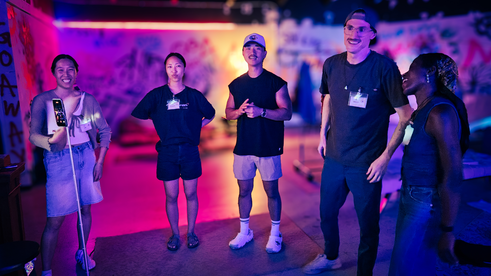
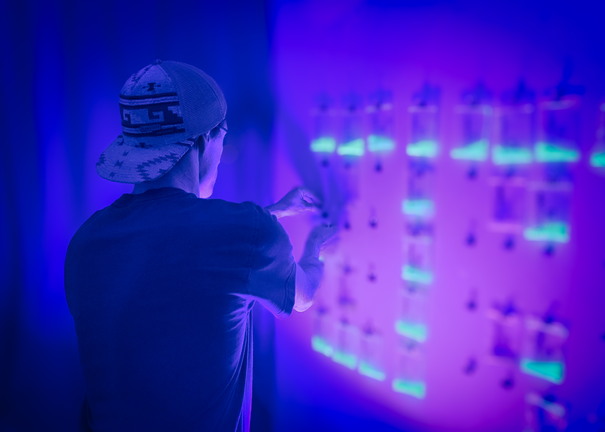
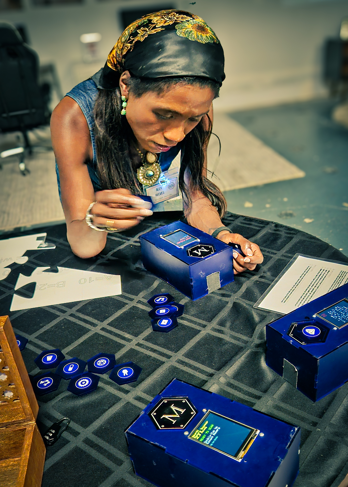
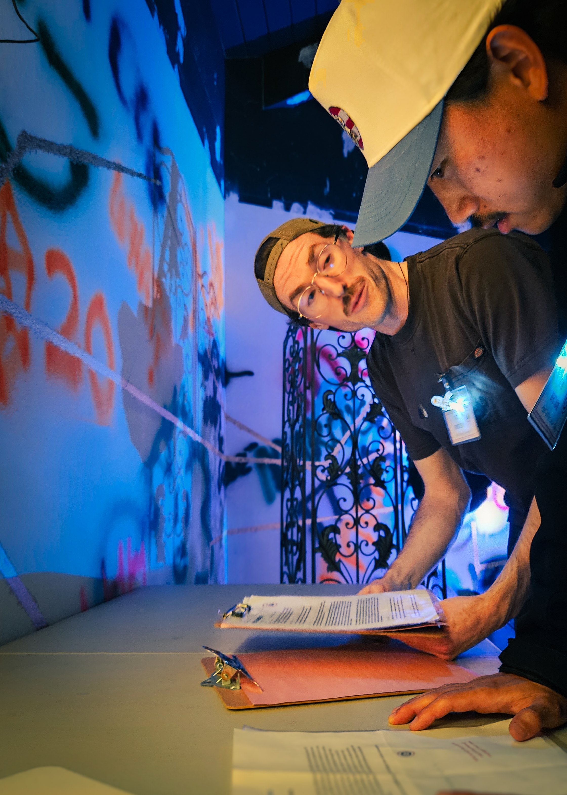
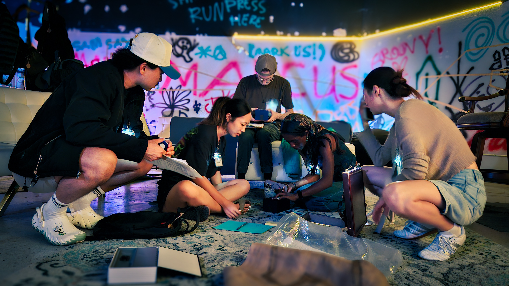
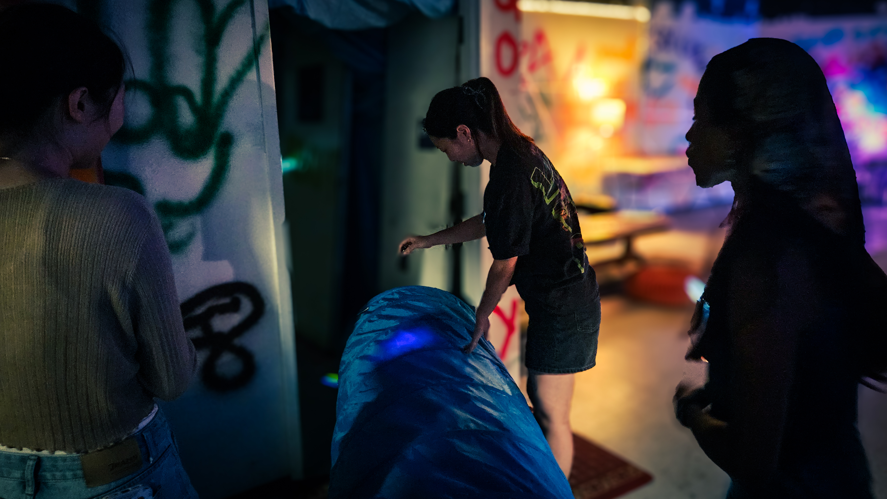

The Man Calling It an Accident Was Moving the Money
Five people spent the morning with Marcus Blackwood's secrets and voted, 5-0, that he killed himself. By then NeurAI was changing hands, and Vic Kingsley, who pushed the overdose hardest, had wired half a million each to two people in the room. He called it an investment.

5-0. No one accused. Marcus Blackwood is dead, and by every account that reached me, the five people who spent this morning with his secrets walked out of a warehouse under one verdict: accidental overdose. He did it to himself. Clean hands all around.
I was not in that room. Everything I have came secondhand, by tip and by source, and one source put a single line at the center of it. As the room moved to close the question, Blake, the Valet who had spent the morning paying out for the memories people wanted buried, said the quiet part out loud. The verdict, he told them, "keeps all of your hands clean here despite all the evidence." The man paying for the silence was the only one willing to name it.
So this is not a story about whether Marcus overdosed. The room may be right about that. It is a story about who needed him to have. The tips came through the morning. The leaks are still coming tonight. This is what they add up to.
The Story
The maneuvering started before the investigation did. Several sources flagged the same first thing from this morning, and it was not evidence. It was a deal. Vic and Remi were negotiating almost the moment the group woke, before anyone had opened a single memory token. One source caught Vic's words: "So, we got that deal? Will you share that information if I give you that code?" Two of the five had an arrangement running before the work began.
Then the tips began, each one a memory recovered from the night before. They started with the drug.
Marcus did not buy Psychotrophin-3A. He took it the way he took everything. The chemist who made it had buried its safety data to keep it caged, and Marcus pried it back open and demanded a fresh batch at higher doses. The danger was not a side effect he put up with. It was the part he wanted.

And he was not only taking it himself.
The extractions worked, in his own words. Guests reduced to what he called drugged zombies, harvested while they stared at the walls. The drug the room would later vote to blame was never just Marcus's habit. It was his instrument.

The next tips were corporate. NeurAI was being pulled apart before Marcus died. A cease-and-desist sat in the morning's documents, Alex's claim that the company ran on her stolen code, demanding his removal and her own installation as chief technology officer. It reached me in full, weeks from a court date, and it argued the architecture cold. The code was hers. Marcus, by more than one memory, could not write code at all.
Even the memory that proves the theft ends on Remi's own angle. Not justice, but leverage: get Vic to stop funding Marcus and start funding him instead. The man who laid the theft bare was working it for himself.
That was the shape of all of it. The coup was real, and the people in line to inherit were sitting in the room. A source caught Alex and Vic relitigating an old wound to its face, Alex saying she did the work while he and Marcus took the money, Vic calling her an intern, Alex insisting she was not. Old scores, still open.
The damage was not only corporate. Two memories carry the most human thing in the file. Marcus had two women with every reason to be enemies. Sarah had thrown him out. Jess was carrying his child, a paternity test mailed anonymously to settle it. The night before, Jess had wanted two minutes alone with him.
What the night did next, nobody scripted. Hours later, in a bathroom at 1:36, the two of them found each other instead of turning on each other.
Not enemies. Both his victims. A source heard it surface again this morning, Jess turning to Sarah with "this is mine... oh, Sarah, I don't know if you want to know." The verdict that cleared everyone would flatten this too, the wreckage of two lives folded into one more thing the room agreed to move past.

There was one last tip before the morning turned, and it was the heaviest. A memory carried the file Riley had built for Sarah's divorce.
Secret bank accounts. Shell companies. Insider trading reaching into the government. A decade of what Marcus had buried, gathered in one place and sitting in the room this morning, in reach of all five. They had it. They chose not to open it.
By the time the morning narrowed to a vote, the record was damning. A blackmailed chemist. A host who drugged his own guests. A company built on stolen code. Two women he had wrecked. A dossier of crimes. And then the room turned against its own findings.
It happened at the close, and Vic drove it. A source has him arguing that Marcus "was a bad guy" who "just overdosed on some drugs," so the room should move on. He had reason to want that reading. He had been funding Marcus and watching the investment spiral, and the drug handed him a cause that pointed nowhere near himself. It also happened to be true. Marcus knew Psychotrophin-3A was dangerous and kept using it anyway. That made it the perfect answer: real, and it required no one.
Not everyone let it pass. Blake told Vic he had "spoken like a truly a person with some true stakes in making sure that we get past" the question. Vic kept trying to get Marcus's cyber-escort venture into the record, a thread that did nothing for the overdose theory, until Blake stopped him cold: "how do the sex bots relate to our overdose theory here, Vic?" He kept reaching for things that did not fit the answer he was assembling.
Remi seconded him, pushing the line that the drug "just made him more crazy." When Blake called a preliminary vote, the overdose reading came back unanimous, lopsided enough that no second round was needed. The coup, the stolen code, the drugged room, the dossier, all of it waved off in a sentence. Nothing left to look at.
And in those same minutes, as the books closed, a source watched Vic move money into the other players' accounts and sum it up in a single word: an investment. The man who had just argued hardest that there was nothing here to investigate was, at that exact moment, paying out. Blake was keeping his own record. The one on the transactions.
Follow the Money
Five accounts on Blake's ledger absorbed $6.57 million in extracted memories the morning Marcus Blackwood was declared an accidental overdose. Four of the five carry the names of people who were in that room. I report the names and totals as ledger facts and nothing more. A named account is where the money landed. It is not proof of who put it there.

Remember the deal Vic and Remi had running before the morning began. The largest account is named Jess: nineteen memories, $3.59 million, nearly all of it in the final fourteen minutes. The account named Vic took in $2.35 million, then dropped to $1.4 million after two transfers, observed and logged, of $500,000 each, into the accounts named Alex and Remi as the no-fault reading was being sealed. Vic called those transfers an investment.
The fifth account carries a name that was never in the room. Flip is a black-market label, a pseudonym, a frame. It took $630,000, and no one has explained it. The Alex and Remi accounts hold no burials of their own at all. They hold Vic's money. Earlier, when Vic reached for a memory near the public screen, a voice had already called it: "what, you gonna take and sell these too?" By the time the books closed, the ledger had answered for him.
The Players
Five went in this morning and five walked out under the same verdict. No one's hands were dirty. What each of them walked toward is a different question, and the answers have mostly arrived since.

Vic drove the reading that served him best, stated his stake, and moved money as the books closed. He walked out with no finger pointed his way and, by what I hear tonight, back to business as usual. Remi seconded him, and a source says Remi now stands to collect the funding from Vic he had been chasing since before the party, with Marcus no longer in the way. Alex held the strongest claim on NeurAI of anyone in the room, years of stolen credit and a suit to match. By a rumor that reached me this afternoon, she is dropping the suit to take the CTO chair she demanded in it, no trial required.
Sarah and Jess made the only choice in that room nobody seems to have engineered. They chose each other. The wife Marcus had financially predated and the woman he left carrying his child decided they were not rivals, and by this evening they appear to have left the country together. I wanted to leave them there, as the one clean thing in all of this. I cannot. An email leaked to me tonight has the NeurAI board preparing to hand Sarah the chief executive's chair. Marcus's chair. The biggest prize anyone in that room stood to gain. And the largest account on Blake's ledger carries Jess's name. Their solidarity was real. So was the arithmetic of where it left them. I am not accusing those two of anything the other three did not do. I am only saying they were not the exception. There wasn't one.
What's Missing
Thirty-two extracted memories were buried this morning, and I will never see what they held. I can give you the shape of the silence: the accounts, the timing, a burst of burials in the final minutes. The content is gone. That is not a gap in the record. It is the record. A cover-up does not have to erase the facts. It only has to make sure no one asks what they mean.

I still do not know the terms of the deal Vic and Remi cut on waking, "share that information if I give you that code," the first thing that happened when the room opened its eyes. I do not know who chose the name Flip for an account that took $630,000. Some of this the room could not have known. Some of it the room chose not to chase. Either way, the shape of the silence was not an accident. It was voted on.
Closing
The room voted 5-0. No one was accused. That is the finding, and I do not overrule it. The room's reading may well be right. The question that remains is not how Marcus died but the shape of the answer. A man who blackmailed a chemist, drugged his own guests, and built a company on a colleague's stolen work died with every one of those facts in plain reach of the five people who spent the morning with his secrets. They chose the answer that asked the least of any of them.
The same verdict that cleared everyone also positioned everyone. That is not coincidence. That is design. The succession and the no-fault reading arrived in the same hours, the pieces already moving while the room agreed there was nothing to see. A chair, a title, a line of funding, a clean exit. The room did not just fail to find a culprit. It distributed the winnings.
This is what Marcus built: a machine where the people with the most to lose from the truth get to write the ending. The room walked out with a clean conscience and a brighter tomorrow. The company goes on. The memories stay buried. The board installs cleaner hands. The overdose verdict will stand in the record as the last thing anyone agreed on before the sirens reached the door. No matter how much changes here, everything stays the same.